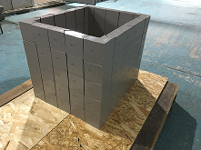

← Вернуться в каталог
Заказать

Свинцовые блоки
Назначение
Блоки свинцовые «БС» относятся к изделиям общепромышленного назначения и предназначены для защиты персонала от ионизирующего излучения (гамма-излучения) при работе с источниками, блоками детектирования радиометрической аппаратуры.
Характеристики
- Материал: свинец марки С-1, С-2
- Толщина блоков: 50 мм
- Популярный комплект: «БС-50-01» («колодец») или «домик свинцовый»
Комплектация БС-50-01
| Наименование блоков | Размер, мм | Вес | Количество, шт. |
|---|---|---|---|
| БС-01 нижний прямой | 125×125×50 | 6,1 кг | 14 |
| БС-02 средний прямой | 125×125×50 | 5,4 кг | 42 |
| БС-03 верхний прямой | 125×100×50 | 4,7 кг | 14 |
| БС-04 нижний угловой | 125×125×100×50 | 9,1 кг | 4 |
| БС-05 средний угловой | 125×125×100×50 | 8,1 кг | 12 |
| БС-06 верхний угловой | 125×100×100×50 | 7,1 кг | 4 |
* Все детали заказа обсуждаются лично с компанией